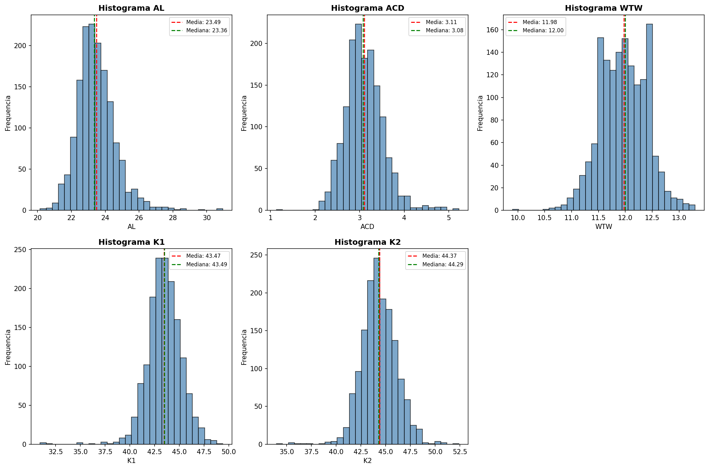
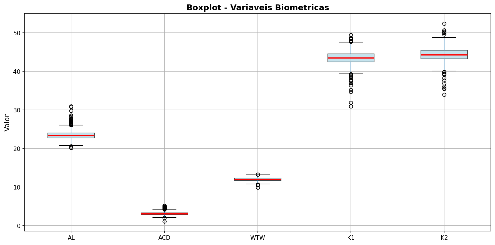
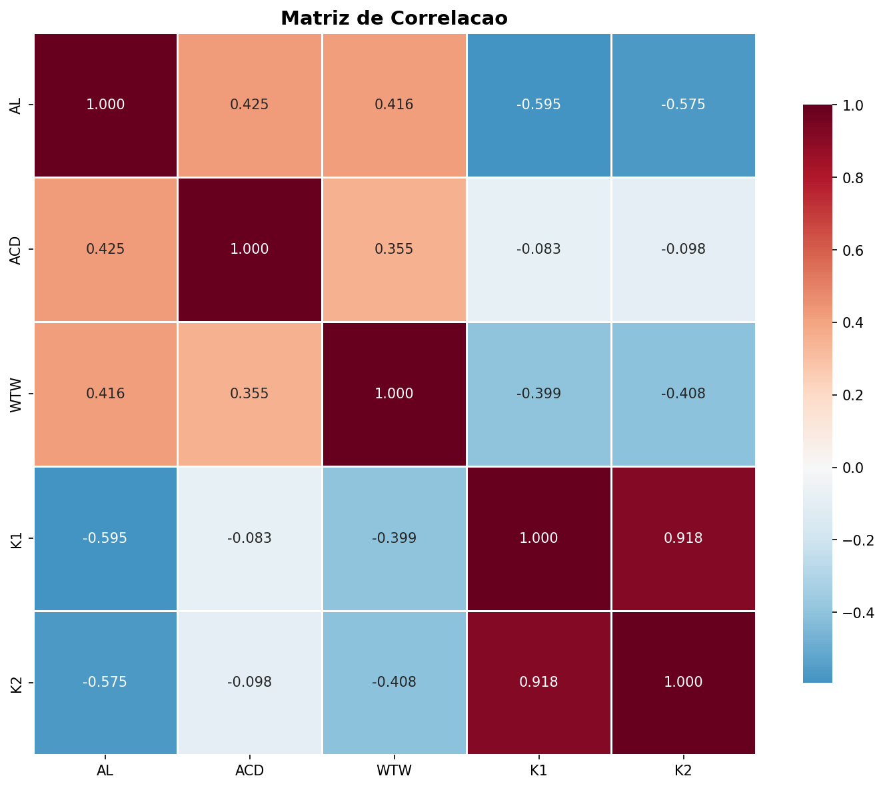
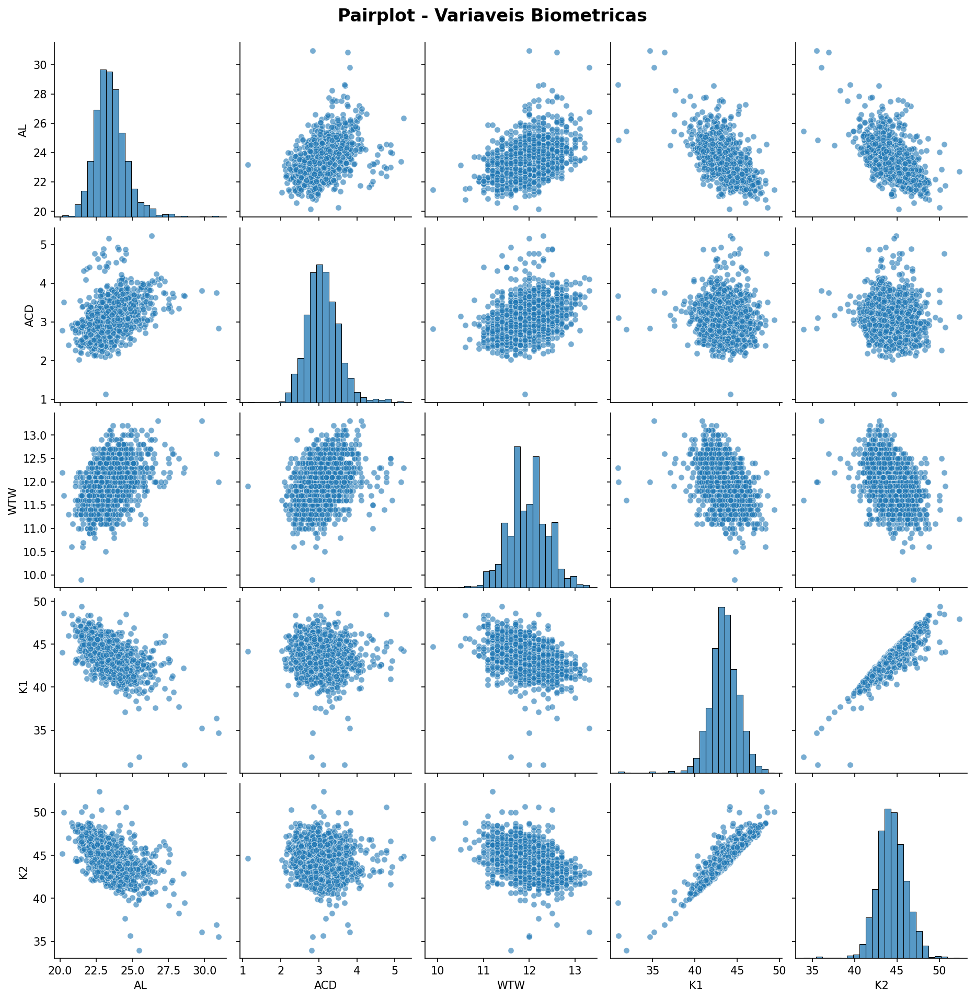

Analise Exploratoria de Dados (EDA)
Dataset: Barrett II Eyes Clustering
Registros: 1528 | Features: 5 (AL, ACD, WTW, K1, K2)
Estatisticas Descritivas
| Variavel | Media | Std | Min | Q1 | Mediana | Q3 | Max |
|---|
| AL | 23.49 | 1.14 | 20.15 | 22.76 | 23.36 | 24.08 | 30.96 |
| ACD | 3.11 | 0.43 | 1.13 | 2.83 | 3.08 | 3.36 | 5.23 |
| WTW | 11.98 | 0.43 | 9.90 | 11.70 | 12.00 | 12.30 | 13.30 |
| K1 | 43.47 | 1.75 | 30.93 | 42.45 | 43.49 | 44.53 | 49.41 |
| K2 | 44.37 | 1.77 | 33.95 | 43.27 | 44.29 | 45.49 | 52.41 |
Histogramas

Boxplots

Matriz de Correlacao

Pairplot

Outliers Identificados
AL: 44 outliers (2.9%)
ACD: 26 outliers (1.7%)
WTW: 7 outliers (0.5%)
K1: 26 outliers (1.7%)
K2: 21 outliers (1.4%)
Principais Descobertas
- K1 e K2: Altamente correlacionados (r=0.975), como esperado para medidas de curvatura corneana
- AL: Maior variabilidade (range=10.81), distribuicao assimetrica positiva (skew=1.12)
- WTW: Menor variabilidade (std=0.43)
- Outliers: Presentes em todas variaveis, especialmente em AL (44) e ACD (26)